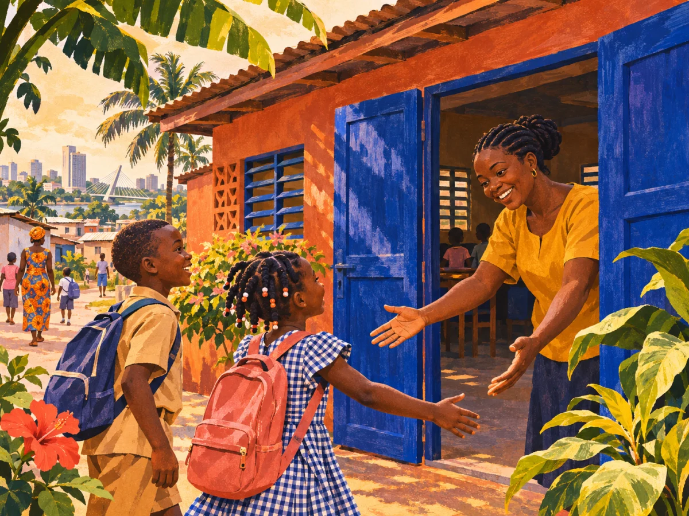

Abobo · Abidjan · Boli Kosta
Akwaba Etxea
Ezagutu Aboboko harrera-etxea eta Medericen historia. Ondoren, osatu babes-ibilbidea eta landu bi egoera praktiko.
Ireki Akwaba EtxeaIkasgelan lantzeko baliabideak

Abobo · Abidjan · Boli Kosta
Ezagutu Aboboko harrera-etxea eta Medericen historia. Ondoren, osatu babes-ibilbidea eta landu bi egoera praktiko.
Ireki Akwaba Etxea